Tailler le crayon
2019-01-18
Il était une fois, dans le lointain royaume de Honey Pot deux étudiants d’art qui commençaient ses études dans le prestigieux atelier Leonardo.
L’un de ces élèves, prénommé Mathieu provenait d’une humble famille d’abeilles ouvrières.
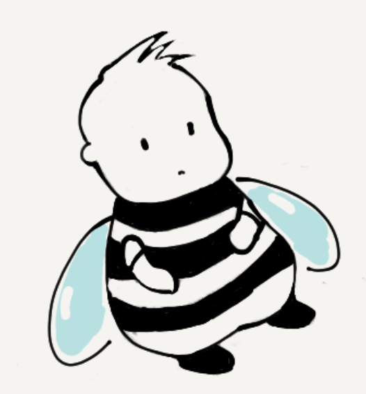
L’autre, prénommé Brutus, provenait d’une illustre famille de conseillers de la Reine, sa majesté Isabelle Antophila.
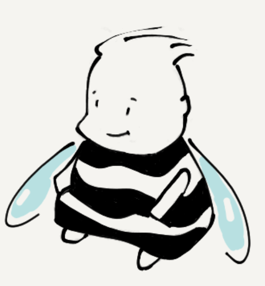
Compte tenu de sa situation, Mathieu acquit qu’un modeste crayon de bois et un cahier pour ses études.
Brutus, contrairement à Mathieu, eut le droit à une vaste gamme de produits et un atelier personnel digne du meilleur des professionnels.
Cependant, Brutus n’était pas satisfait : un manque de stock au magasin lui avait empêché d’acquérir des fusains de charbon.
Dans sa collection d’outils artistiques, on comptait des pastels secs, des aquarelles, des cahiers pour des pastels, des cahiers pour des acquerelles... Il avait même une vaste gamme de peintures à l’huile et des toiles !
Mais il voulait absolument ses fusains ! Sans ceux il ne pouvait pas se mettre au travail car c’était par cette technique qu’il avait décidé de commencer son apprentissage après avoir délibéré soginaseuemnt et conclut que c'était la séquence plus optimale.
Il décida donc d’attendre l’arrivée de ces fusains qui devrait se faire dans le prochain débarquement des chargements provenant du royaume de Small Hive.
Pendant ce temps, notre ami Matthieu s’est mis à dessiner.
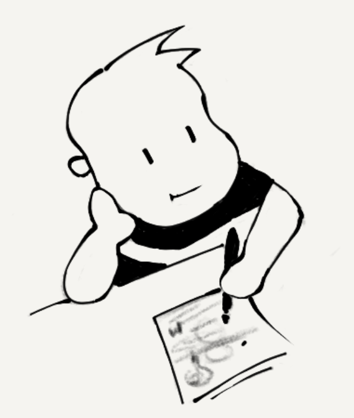
En quelques mois, il avait fait de nombreux dessins. Mathieu dessina tellement que son unique outil et fidèle compagnon commença à se raccourcir, en passant de ça :
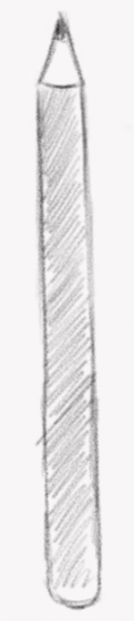
...à ça
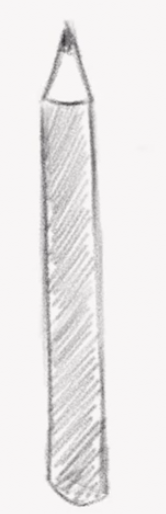
...puis
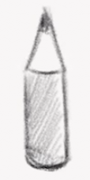
Finalement, Mathieu épuisa son crayon, ainsi que toutes les feuilles de son cahier...
Triste, car il ne pouvait plus dessiner, il s’assit dans un coin de sa chambre.
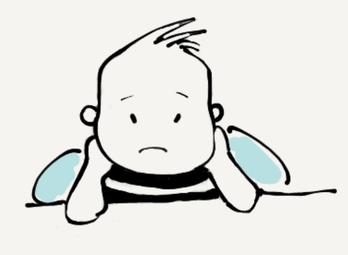
Pendant ce temps,
Une tempête retarda l’arrivée des chargements avec le stock de fusains.
Dans l’attente de ses fusains, Brutus fit cependant de son mieux pour se mettre à travailler…
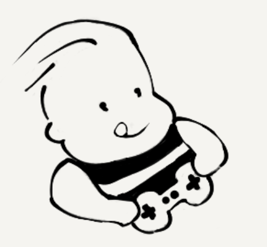
À ce stade du récit, on pourrait se demander, qui d’entre nos deux amis dessine mieux. Mais puisque les comparaisons sont odieuses, nous n’allons pas développer cette idée...
Mais revenons à Matthieu,
La dernière fois qu’on l'a vu il était assis dans un coin de sa chambre, triste de ne pas pouvoir continuer à dessiner...
Je n’ai plus de matériel, qu’est-ce que je peux faire maintenaint? — se dit-il avec tristesse
C’est alors qu’une idée vienne s’installer dans son esprit.
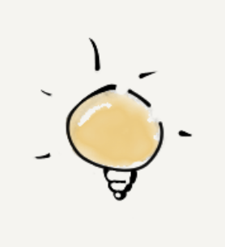
Je pourrais peut-être vendre quelques dessins !
Il prit alors son cahier et se mit à feuilleter les dessins.
Les dessins des premières pages étaient terribles. Dignes d’un amateur. Vraiment. Très amateur. Catastrophe. Terribles
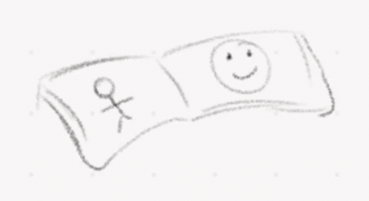
Il continua à feuilleter avec décision jusqu’au milieu de son cahier. Les dessins de cette partie étaient un peu mieux... mais ils n’avaient pas le niveau pour être vendus...
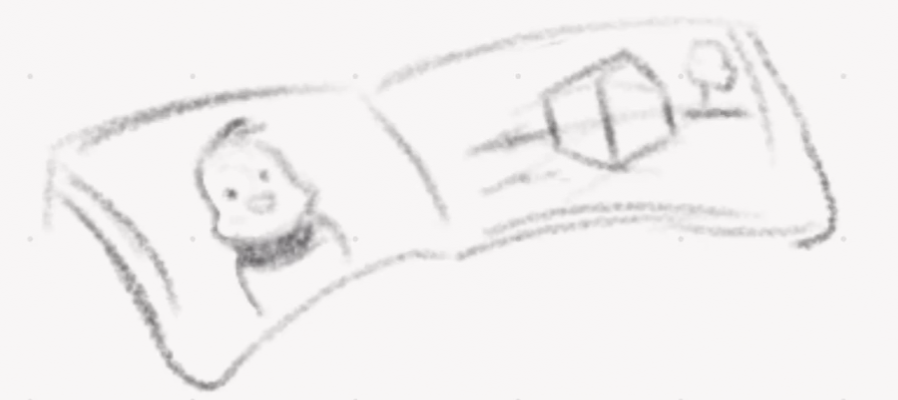
Il continua donc à feuilleter et... lorsqu’il arriva vers le dernier tiers du cahier, il constata une amélioration de la qualité du niveau des dessins. Ces dessins étaient semi-professionnels !
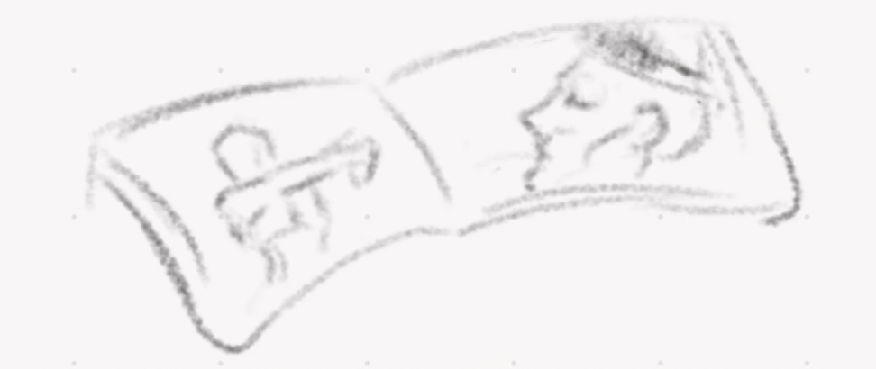
Enthousiasmé il choisit ses meilleurs dessins et s’apprêta à trouver une galérie d’art afin de les vendre.
Il visita sans cesse plusieurs galeries jusqu’à qu’il trouva après beaucoup d'effort un marchand d’art prêt à lui acheter quelques dessins.
Après la vente, il n’obtient pas beaucoup d’argent en échange, mais c'était suffisant pour reprendre sa passion.
J’ai obtenu suffisamment d’ontis (la monnaie du royaume) pour m’acheter non pas un cahier, mais deux ! Et suffisamment d'ontis pour m’acheter non pas un crayon, mais aussi des aquarelles
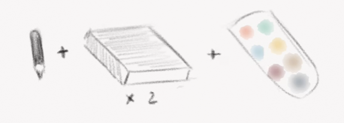
Quelques mois plus tard, Mathieu avait développé l’habitude d’utiliser et exploiter au maximum ce qu’il avait. Il n’a pas été trés difficile de refaire la même prouesse : il épuisa à nouveau tous ses matériels.
Mais cette fois-ci il y a avait une petite différence : Mathieu produisit beaucoup de peintures à l’aquarelle et non des dessins, pouvant donc les vendre à un prix plus élèvé.

Ayant acquis l’expérience nécessaire pour négocier, il prit à nouveau les meilleures œuvres du dernier tiers de son cahier et partit décidé à les vendre. Une fois de plus, il n’obtient pas beaucoup d’argent, après tout, il s'agisait des œuvres d’un étudiant. Mais il obtient beaucoup plus qu'avec ses dessins. Deux options s’offrirent alors à Mathieu:
Je peux continuer à acheter plus de cahiers ou d’aquarelles, ou bien je peux utiliser ces ontis pour me lancer sur la peinture à l’huile
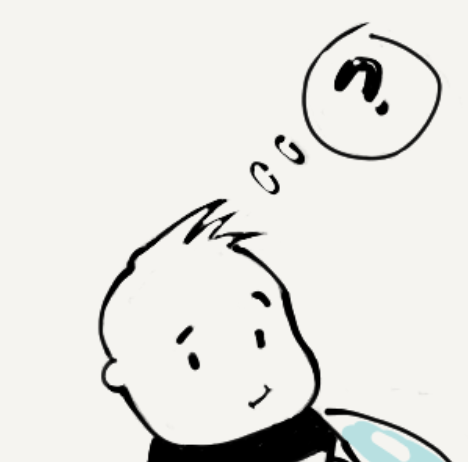
Les peintures et les toiles à l’huile ont une particularité: elles sont très chères. C’est pourquoi, on ne conseille pas aux débutants de commencer par l’huile, car c’est facile de rater une œuvre et donc de gaspiller les matériels, donc ce ne fut pas une décision facile pour Mathieu.
Mais il n'était plus un débutant! Il décida donc de se faire confiance et en acceptant le risque il acheta quelques peintures à l’huile en se mettant toute suite au boulaut et pas de surprises: en quelques semaines Mathieu épuisa ses outils d'art à nouveau
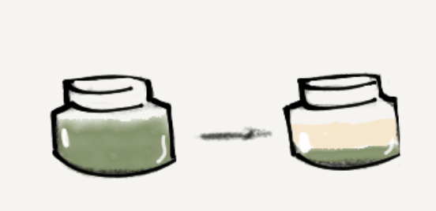
Après de centaines d'heures d’expérience, Mathieu possédait une base très solide en dessin. Également, il possédait une très bonne base de théorie de couleurs qu’il acquis en expétimentant à l'aquarelle. Contrairement aux fois précedentes, ses œvres avaient une qualité professionnelle dès le premier trait, il vendit donc toutes et chacune de ses peintures !
Les peintures à l’huile se vendent, compte tenu du haut prix des matériaux et la difficulté de la technique, à un très bon prix (pour l’artiste, bien évidemment). C’est ainsi qu’en faisant de petits pas, en travaillant avec ce qu'il avait, en l'exploitant au maximum, en utilisant son crayon jusqu'au but, Mathieu construisit sa réputation et son cachet d'artiste parmi la communauté de HoneyPot.
Quant à Brutus...
Bon, il a reçu ses bien-aimés fusains, mais il s’est rendu compte que dans sa collection d’outils il lui manquait aussi des sanguines. Et comme tout le monde sait, on ne peut pas commencer sa carrière artistique sans avoir quelque chose de si basique, n’est-ce pas ?
Comme dans la parabole des talents de Mathieu :
Si nous ne cultivons pas les dons que nous avons, même s’ils sont nombreux, nous ne récolterons pas de fruit.
Si nous arrosons patiemment les dons que nous avons, même s’ils sont modestes, nous récolterons forcément des fruits.
Je t’invite cher(e) lecteur/lectrice, à ne pas t'obséder par le perfectionnisme et les excuses. Je t’invite à tailler le crayon jusqu’au bout et surtout à le faire dès maintenant, quoiqu’il en soit ton projet ou domaine, tu ne nécessites pas des fusains pour faire le premier pas.
Cet article peut te servir comme exemple: Il y a est probablement pas mal de fautes d’orthographe et d’erreurs de style... Mais je ne vais pas à attendre à avoir mes fusains pour le publier !
Et n’oublie pas que...
Plus de crayons tu auras, plus difficile te sera de tous les tailler.
Reste donc sobre et minimaliste dans te possessions et objectifs, afin que tu puisses te concentrer vraiment à l’essentiel...